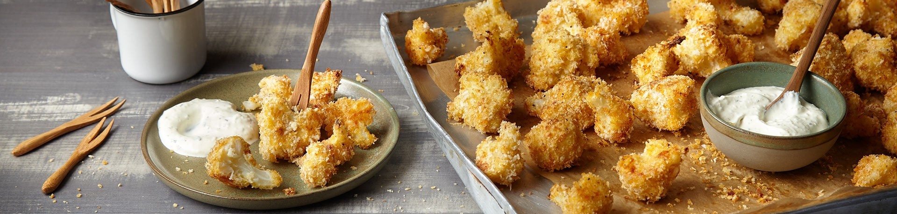

Cauliflower Wings mit Dip

Zutaten:
- 1 Kopf Blumenkohl
- Salz
- 90 g Pankomehl
- 60 g Parmesan
- Pfeffer
- 1 TL Knoblauchpulver
- 1 TL Paprikapulver
- 4 Eier
- 4 EL Milch
- 70 g Mehl
- 50 ml Öl
- 2 Zweig(e) Thymian
- 150 g Crème fraîche
Ran an den Herd!
- Blumenkohl waschen und in Röschen teilen. In kochendem Salzwasser 5-7 Minuten bissfest garen. Kohl kalt abschrecken und abkühlen lassen.
- Für die Panade Pankomehl, 50 g Parmesan, Salz, Pfeffer, Knoblauchpulver und Paprikapulver mischen. Eier und Milch in einem tiefen Teller verquirlen. Mehl ebenfalls auf einen tiefen Teller geben.
- Blumenkohl-Röschen zuerst in Mehl, dann in Ei und zuletzt in Panko wenden. Röschen auf ein mit Backpapier belegtes Backblech verteilen und mit Öl beträufeln. Im vorgeheizten Backofen bei 220 °C ca. 15 Minuten backen.
- In der Zwischenzeit für den Dip Thymian waschen, trocken schütteln und hacken. Crème fraîche mit übrigem Parmesan und Thymian verrühren. Mit Salz und Pfeffer abschmecken und zu den Cauliflower Wings servieren. Cauliflower Wings heiß genießen.